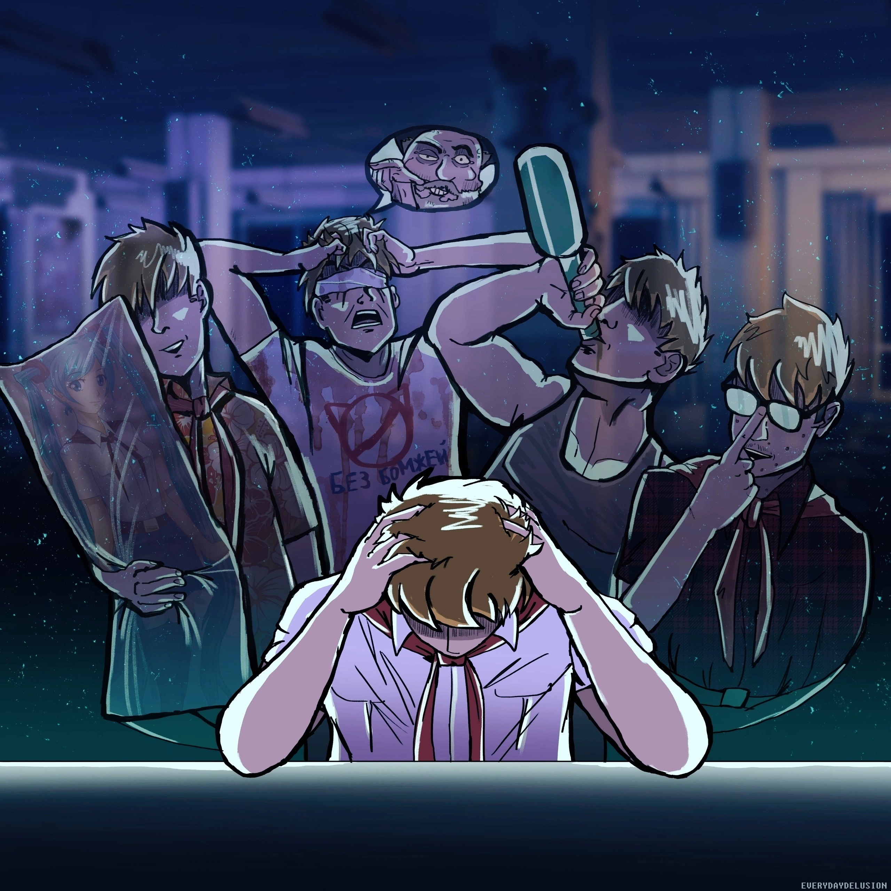

Вселенная модов
"История одного неудачника"
История одного неудачника - серия пользовательских фанатских модификаций к визуальной новелле "Бесконечное лето", разработанная группой друзей и единомышленников, взявших себе название "Плохая концовка и точка".
История одного неудачника - это трилогия произведений, читать которые рекомендуется в указанном порядке:
Как отмечается многими читателями, в произведение заложен более глубокий смысл и более запутанный сюжет, чем может показаться на первый взгляд. Одновременно с этим мод имеет довольно высокий градус откровенно трешовых моментов (к примеру, галлюцинации главного героя под действием препаратов, пошлые и прочие фансервисные моменты, злодей истории, воплощенный в форме кошкобомжа, и т.д.). Тем не менее, авторы данной модификации не считают свою работу принадлежащей исключителько к жанру треш-модов. Это куда более серьезная история, при создании которой было решено разрушить определенные шаблоны сторителлинга и избрать более оригинальные варианты художественной подачи. В ИОНе присутствуют отсылки на фильмы, книги, аниме, песни, интернет-мемы и прочие вещи.
